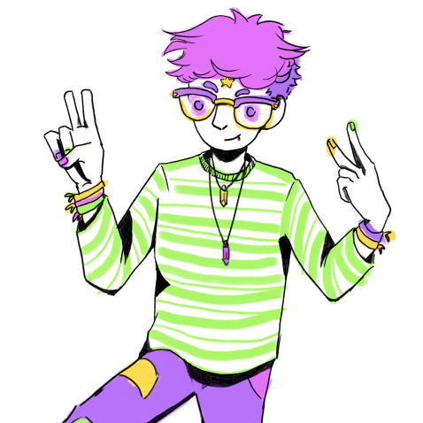
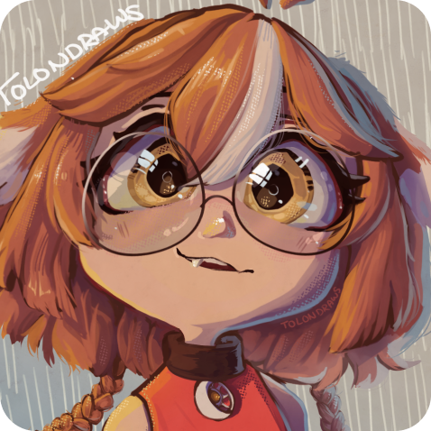

Conoce nuestro Equipo

Alexander Morales
Diseñador Gráfico
Diseñador gráfico con más de 8 años de experiencia en identidad visual, diseño editorial y piezas promocionales. Me especializo en transformar briefs complejos en soluciones visuales claras y memorables, cuidando tanto la estética como la funcionalidad para impresión y digital. Trabajo de cerca con clientes para definir tono, paleta y jerarquía visual, y coordino la producción para asegurar que los archivos lleguen listos a imprenta o a publicación en línea.
Mi proceso incluye investigación de audiencia, bocetado, desarrollo de variantes y pruebas de color; siempre entrego archivos editables (.ai, .psd) y versiones optimizadas para redes. Me interesa el diseño que comunica con precisión y que además tiene carácter propio.
Sígue mis redes
Instagram Facebook Tiktok
Angela Gastelum
Ilustración
Diseñadora digital con perspectiva global, forjada al vivir entre tres continentes y exponerme a diversas culturas. Esta experiencia única me permite crear diseños con sensibilidad cultural y relevancia internacional. Combino especialización técnica en arte digital con una mirada narrativa que busca contar historias en una sola imagen.
Trabajo principalmente en Clip Studio Paint y Procreate; desarrollo desde bocetos conceptuales hasta ilustraciones finales listas para impresión y web. Me interesa explorar paletas y composiciones que funcionen tanto en campañas comerciales como en proyectos editoriales y packaging.
Sígue mis redes
Instagram Facebook TiktokFernanda Ortiz
Animación
Soy animadora e ilustradora; pasé la mayor parte de mi vida creativa en la web, lo que me inspiró a desarrollar piezas con influencias de videojuegos y estéticas alternativas internacionales. Mis trabajos combinan referencias extranjeras y locales para crear composiciones visuales con personalidad propia.
Tengo experiencia en animación frame-by-frame, rigging y ciclos en loop, y me adapto con facilidad a nuevas herramientas y pipelines. En cada proyecto priorizo la claridad del movimiento y la expresividad del personaje, cuidando tiempos, poses clave y limpieza para que la animación funcione en cualquier formato: redes, video o integración en motores.
Sígue mis redes
Instagram Facebook Tiktok